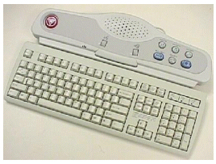

NOTE:
The adhesive on the velcro takes 24 hours to completely adhere to the bottom of the keyboard. Allow the adhesive to dry completely before removing keyboard from SCIM base.
Illustration 6:
SCIM AND KEYBOARD ASSEMBLED
